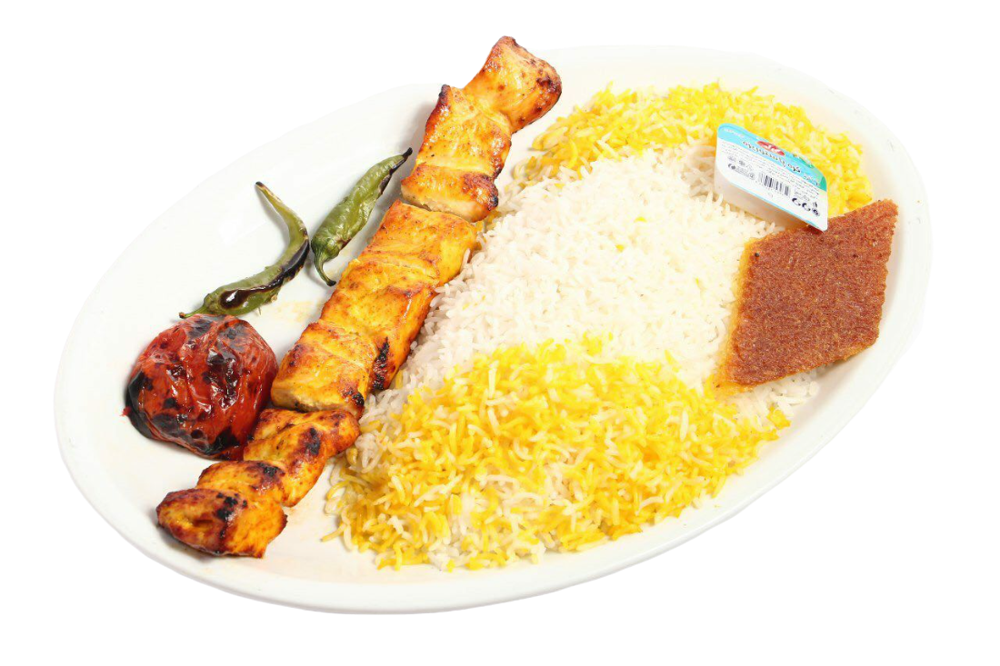
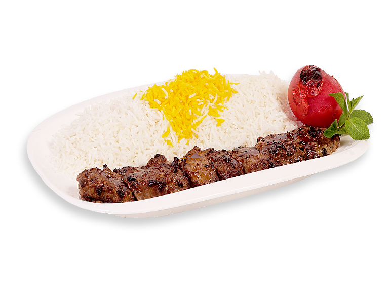
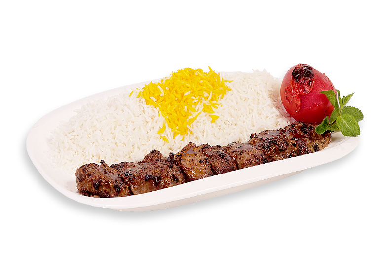

آشپز باشی

تنها شعبه رسمی آشپزباشی (بقیه اسکی رفتن)

جوجه کباب
در پخت جوجهکباب، قطعات خردشدهی گوشت مرغ را برای مدتی تقریباً طولانی (حدود سه ساعت)
در یک ظرف پر از آبلیمو، پیاز خردشده،
زعفران و سایر ادویهجات قرار میدهند و پس از اینکه قطعات گوشت طعمدار شد،
آنها را به یک سیخ بلند میکشند و روی کبابپز و به وسیلهی آتش مستقیم، کباب میکنند
قیمت : 350 هزار تومن
 

کباب کوبیده
خوشمزه ترین نوع کباب، کبابی است که با گوشت گوسفند تهیه می شود؛
این گوشت مزه خوبی داشته و همین موضوع سبب شده،
کباب کوبیده گوسفندی، بسیار خوشمزه شود.
البته به دلیل بالا بودن قیمت گوشت گوسفند ممکن است از گوشت گوساله
و یا مرغ نیز در طبخ این غذا بهره ببرند.
قیمت : 250 هزار تومن
وزیری
کباب وزیری از کباب کوبیده تشکیل شده که گوشت گوسفندی چرخ شده
همراه با تخم مرغ و پیاز جوش شیرین در سیخ های پهن تهیه می شود.
کباب وزیری دارای یک سیخ جوجه کباب نیز هست،
جوجه کباب زعفرانی بسیار محبوب است وقتی تکه های مرغ جوجه کبابی
را درون مواد قرار می دهیم میگذاریم طعم دار شوند،
جوجه کبابی لذیذ حاصل می شود.
قیمت : 400 هزار تومن
قیمه
خورش قِیمه یا خورش لپه از غذاهای آشپزی ایرانی است.
این خورش در میان ایرانیها و عراقیها غذایی پرطرفدار است
و برای پخت آن از رب گوجه فرنگی و پیاز سرخ شده، لپه، گوشت قرمز،
سیب زمینی سرخ شده به همراه لیموی خشک (لیمو عمانی) به عنوان طعمدهنده استفاده میشود.
قیمت : 150 هزار تومن